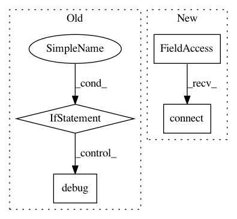

9418883d418ecccd7fe5da4dddffdc01064efb23,ilastik/workflows/carving/splitBodyCarvingWorkflow.py,SplitBodyCarvingWorkflow,__init__,#SplitBodyCarvingWorkflow#Any#Any#Any#Any#Any#,74
Before Change
self._applets.append(self.splitBodySupervoxelExportApplet)
self._split_tool_params = None
if workflow_cmdline_args:
arg_parser = argparse.ArgumentParser(description="Specify parameters for the split-body carving workflow")
arg_parser.add_argument("--split_tool_param_file", required=False)
parsed_args, unused_args = arg_parser.parse_known_args(workflow_cmdline_args)
if unused_args:
logger.warn("Unused command-line args: {}".format( unused_args ))
if parsed_args.split_tool_param_file is None:
logger.warn("Missing cmd-line arg: --split_tool_param_file")
else:
logger.debug("Parsing split tool parameters: {}".format( parsed_args.split_tool_param_file ))
json_parser = JsonConfigParser( SplitToolParamsSchema )
self._split_tool_params = json_parser.parseConfigFile( parsed_args.split_tool_param_file )
def onProjectLoaded(self, projectManager):
Overridden from Workflow base class. Called by the Project Manager.
After Change
self.dataSelectionApplet = DataSelectionApplet(self, "Input Data", "Input Data", supportIlastik05Import=True, batchDataGui=False)
opDataSelection = self.dataSelectionApplet.topLevelOperator
opDataSelection.DatasetRoles.setValue( ["Raw Data", "Pixel Probabilities", "Raveler Labels"] )
self.preprocessingApplet = PreprocessingApplet(workflow=self,
title = "Preprocessing",
projectFileGroupName="preprocessing")
In pattern: SUPERPATTERN
Frequency: 3
Non-data size: 4
Instances
Project Name: ilastik/ilastik
Commit Name: 9418883d418ecccd7fe5da4dddffdc01064efb23
Time: 2014-03-26
Author: bergs@janelia.hhmi.org
File Name: ilastik/workflows/carving/splitBodyCarvingWorkflow.py
Class Name: SplitBodyCarvingWorkflow
Method Name: __init__
Project Name: streamlit/streamlit
Commit Name: e0e9d7350826c7d968e48181cea38bde23942c30
Time: 2019-06-19
Author: tconkling@gmail.com
File Name: lib/streamlit/watcher/EventBasedFileWatcher.py
Class Name: _FolderEventHandler
Method Name: add_file_change_listener
Project Name: streamlit/streamlit
Commit Name: 0548aad44b5138ea0bbc96ef8964b986bebcb589
Time: 2019-06-18
Author: tconkling@gmail.com
File Name: lib/streamlit/watcher/EventBasedFileWatcher.py
Class Name: _FolderEventHandler
Method Name: add_file_change_listener